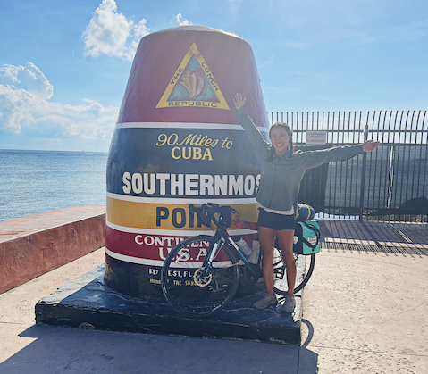
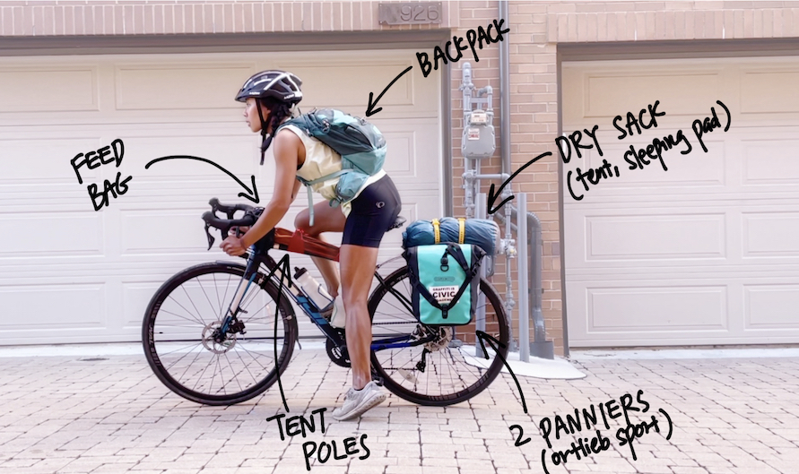

Biking the East Coast Greenway
What do you get when you mix a month-long vacation opportunity with a budding cyclist going through a quarter-life crisis? A solo bikepacking trip down the East Coast! In 2021, I cycled 3,000 miles from Calais, Maine to Key West, Florida in 29 days, and set a record speed too (not that it’s a race haha but I am pretty proud of this). I don’t think I can adequately describe how amazing this trip was in few enough words to hold anyone’s interest, so I made a video!
I dove into this trip with essentially zero bikepacking knowledge and endurance cycling experience, but I made it, and I truly believe anyone who sets their mind to it can accomplish this (and so much more) as well. I’ve documented my planning process and trip thoughts to help you out if you’re interested in biking the East Coast Greenway, too :D
Youtube Video
REI Article
Senior Rippers Article
Appian Blog Article
East Coast Greenway Feature
Pedalshift Project Podcast feature
Board Member Feature
Trip Video and Reflections
Disclaimer: I have no idea why, but the video might look "washed out" on Mac laptops. It's fine on phones and other devices!
Planning Process
6 months beforehand: ask for time off
4 months: planned to “train” by biking about 100 miles a week (but this didn’t actually happen because I got a double knee injury, so my “training” ended up just being recovering)
2 months: plot out daily routes
1 month: message friends to stay with, book flights, get a sense of which warm showers hosts to contact (I would reach out about 3 days in advance when the trip was in progress)
Biking Schedule
I initially planned to bike roughly 100 miles a day, which helped me map out where I would visit friends, stay at campsites, or make new friends at Warm Showers homes. I highly recommend creating an account on Warm Showers ($35 one-time fee) — this site is full of people who love bikepackers and will graciously open their home (and showers!) to you. Staying with these folks was the best part of my trip and I’m so glad I pushed myself to meet new people.
| Day | Mileage | Destination | Planned Sleeping Location |
|---|---|---|---|
| 1 | 140 | Acadia | Blackwoods Campground |
| 2 | 92 | Camden | Warm Showers |
| 3 | 120 | Portland | Warm Showers |
| 4 | 80 | Rye | Tidewater Campground |
| 5 | 83 | Boston | Friend's Home |
| 6 | 106 | Providence | Warm Showers |
| 7 | 112 | Hartford | Warm Showers |
| 8 | 60 | New Haven | Friend's Home |
| 9 | 103 | Manhattan | Friend's Home |
| 10 | 121 | Philadelphia | Friend's Home |
| 11 | 85 | Perryville | Craft Haven Campground |
| 12 | 80 | Baltimore | Friend's Home |
| 13 | 92 | DC | Home!!! |
| 14 | 145 | Richmond | Friend's Home |
| 15 | 130 | Boydton | Rudd's Creek Campground |
| 16 | 118 | Raleigh | Friend's Home |
| 17 | 104 | Fayetteville | Motel (Could not find a campsite and didn't feel comfortable stealth camping) |
| 18 | 105 | Wilmington | Friend's Parents' Home |
| 19 | 110 | Myrtle Beach | Motel (Needed to treat myself after the worst & wettest day of the trip!) |
| 20 | 62 | Georgetown | Hidden Marina Campground |
| 21 | 91 | Charleston | Warm Showers |
| 22 | 116 | Savannah | Skidaway Island State Park |
| 23 | 102 | Brunswick | Blythe Island Regional Park (they have bunnies!) |
| 24 | 86 | Jacksonville Beach | Warm Showers |
| 25 | 130 | Titusville | Titusville KOA |
| 26 | 105 | Vero | Friend's Parents' Home |
| 27 | 155 | Miami/Hollywood | Warm Showers |
| 28 | 65 | Key Largo | Warm Showers |
| 29 | 105 | Key West, baby! | Motel :) |
How I Fueled
I think everyone fuels themselves differently from each other, but about halfway through the trip I finally figured out a system that kept me full and energized.
Breakfast: overnight oats and a banana (oats are good at keeping me full for a long time since they take awhile to digest)
While riding: I had a mix of healthy, not-unhealthy and sweet snacks to keep me going
Healthy: Bananas (potassium keeps me from “bonking”), dried figs (same thing)
Not-Unhealthy: Frosted Mini Wheats (quick sugar release with a bit more substance than candy), Pop Tarts (lots of calories and pretty yummy too), Powerade (but only the zero sugar kind so that my body can rehydrate as quickly as possible), and a clif bar whenever I took a break off the bike
Sweets: gummies (quick sugar release and a good morale boost before and after hills!)
Dinner: If I didn’t stay with hosts, I would go to a grocery store and buy hard boiled eggs (protein), avocado (helps recovery), lots of bread (carbo load), a salad mix kit (gotta get the greens), and a dessert (for happiness)
How I Navigated
I bought a Ride with GPS subscription and made a separate route for each day. While I was riding, I turned on the GPS in offline mode to save battery, and my phone had no trouble staying powered throughout the day. Ride with GPS was great for step-by-step turns and I highly recommend this to folks who, like me, do not want to invest in a bike computer
What I Brought
Here's a list of things I brought. A few things I chose to not bring: A camping stove (because I was eating gas station snacks and grocery store food), Bug spray (took up too much space although would have been nice in Georgia), a camera (again, too much space. Also I don't have a camera)and Rain pants (it was warm enough in September/October that my legs didn't get too cold in the rain).
| Clothes |
|---|
| 1 set of biking clothes + reflective gear |
| 1 set of off-the-bike clothes |
| 1 set of sleeping clothes |
| Rain jacket |
| Cycling cap (very nice to keep rain away from your eyes) |
| Sunglasses |
| Toiletries |
|---|
| Electric Toothbrush |
| Floss |
| Toothpaste |
| Eyeglasses |
| Contacts |
| Contact Solution |
| 2-in-1 Shampoo and Conditioner |
| Razor |
| Diva Cup (highly recommend to all my fellow menstruating outdoors folk) |
| Sleep System |
|---|
| Therm-a-Rest Questar 20 Sleeping Bag Small |
| Sea to Summit Ultralight Insulated Air Sleeping Pad |
| Sea to Summit Aeros Premium Pillow |
| Tools |
|---|
| Blackburn Wayside Multi-Tool |
| Bontrager Charger Mini Pump (my cheap Amazon bike pump broke halfway through the trip. I upgraded to this one and it's FANTASTIC) |
| 2 spare tubes |
| Pedro's tire levers |
| Zip ties |
| Electronics |
|---|
| Phone |
| Front, back, and spoke lights |
| Charging cables and box |
| Extras |
|---|
| Headlamp |
| Plastic bags |
| Butt'r Women's Chamois Cream |
| Bug bite thing (sucker) |
| Sunscreen |
| Small bike lock (nothing sturdy, just enough to give me peace of mind when running into a grocery store) |
How I Packed the Bike

Things I Wish I Knew / Wish I Did
A better understanding of bike maintenance. I could only fix a flat and tighten / unscrew a few things. I didn’t run into serious issues other than my hydraulic brakes breaking (and not braking!) but I would have had much more peace of mind had I better understood a few more things
Go on a real test ride before the trip. And/or not do 140 miles on the first day! I quickly learned that the chamois cream actually is a necessity (there was so much chafing the first few days before I finally got my hands on some), and I should definitely not be carrying all my water on my back (very quickly bought bottle cages on day 3)
Take it slower. 100 miles a day meant about 8 hours on the bike for me. I had to go at this pace because I wanted to finish the entire trip in the amount of time I could take off work. So, this meant I didn’t take any rest days — if there was torrential downpour (and there was!), I couldn’t take a day off and avoid the rain.
Document better. The bike video I made was pretty limited to whatever random footage I took. To be honest, I didn’t actually think I could make it to the end when the trip started, so I didn’t explicitly put effort into taking good videos bbecause I didn’t think there’d be a bike video afterwards. Once I hit Florida, I knew I would make it to the end and that’s when I actually started putting effort into documenting the trip.
Bring a Visa or MasterCard. I had my American Express credit card and many small business do not take Amex because they charges high fees.
What I'm Glad I Did
Talk to people. As an introvert, riding on my bike all day was a great way to recharge. By the time I arrived at my destination, I was physically exhausted but oddly socially refueled and ready to talk to people! I made so many new friends and am proud of myself for stepping out of my comfort zone.
Do this on my own. I learned a lot about myself and my ability to figure things out. If I had done this trip with another person, the experience would have been wildly different and I really liked the growth and flexibility that came with doing this trip on my own. I did let my boyfriend join for about 30 miles in DC and that was so much fun, so perhaps I’ll consider a buddy trip in the future...
Not Over-plan. Other than having a general sense of where I needed to be at the end of the day, I didn’t plan specifics ahead of time. I am generally quite the planner and thought I would want to know every detail down to the location of bathrooms, but this flexibility was quite nice and let me be, dare I say, ~spontaneous~
Come home at the halfway point. I am so, so lucky I could spend a night at my apartment when I passed through the DC area. This let me drop off all the stuff I didn’t need and let me mentally reset (and celebrate my birthday!) before the second half.
Pick a relatively easy route with lots of civilization. Yep.
Dive in even though I wasn’t sure about it. I am very accomplishment-driven and I have trouble trying things I don’t think I can finish. But, I dove into this trip anyways and look how it turned out!
Parting Thoughts
I hope this information is helpful! It's so hard to describe such a personal experience, but I'm always more than happy to chat if you're interested in taking on bikepacking. This was the coolest thing I've ever done and I hope I can inspire others to try as well. Happy riding!
Next Adventure
Journey Back to the Ice